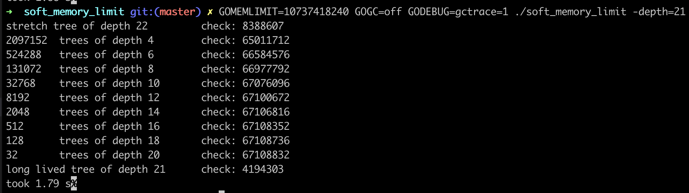
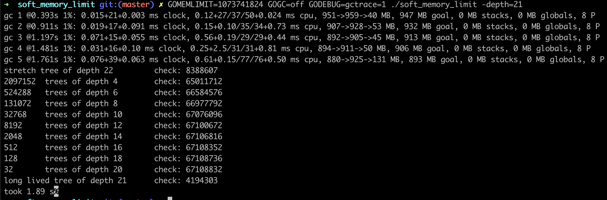
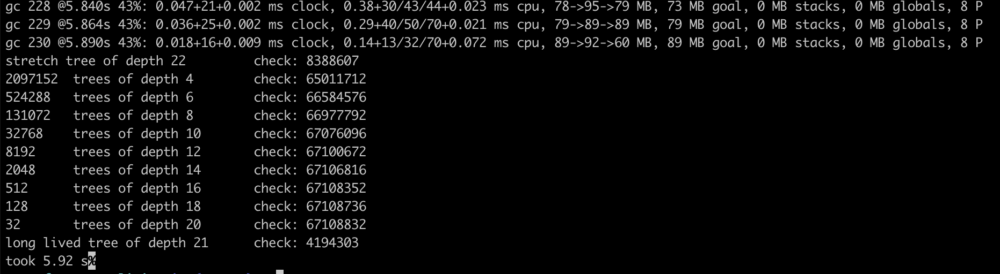
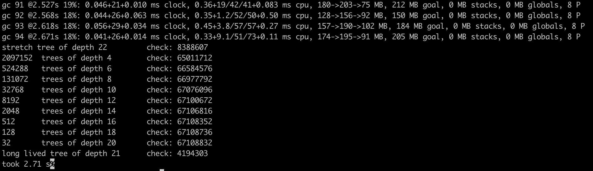
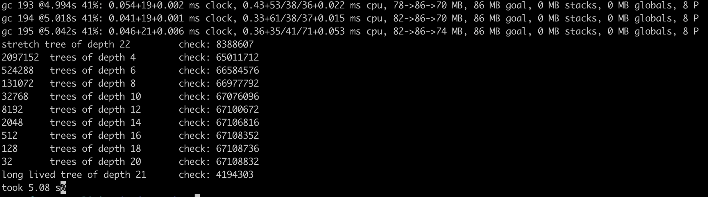

Go 1.19中终于实现了SetMemoryLimit的功能。Go的GC并不像Java那样提供了很多的参数可以调整，目前也就有GOGC这么一个参数，所以能增加一个可以调整GC的参数确实让人兴奋。
一直关注Go性能同学一定知道，最近几年有两个调整Go GC的hack方式:
- ballast: 压舱石技术。使用一个"虚假"的内存占用，让Go运行时难以达到触发GC的阈值，来实现减少GC的次数，从而提高性能。如果你的程序的内存占用基本都会在某个阈值之下的话，这个技术非常有效，毕竟，Go很大的一部分性能消耗都是在GC上。这是twitch.tv的工程师提供的一种技术。
- GOGC tuner: 通过自动调整GOGC，来动态的调整GC的target,用来在内存足够的时候调整GOGC来减少GC的次数，这也是一个非常有趣有效的技术，在uber公司的实践中行之有效。这是uber工程师提供的一项技术，Uber的工程师并没有把它开源出来，不过曹大根据文章的原理实现了一个cch123/gogctuner。
现在， Go 1.19 提供了SetMemoryLimit的功能，通过这个方法，可以替换ballast的方案，部分替换GOGC Tuner的方案。
谈起这个功能的历史，可以追溯到2017年12月的#23044，它提议增加一个方法，可以指定最小的目标堆大小。这个issue大家讨论的热火朝天，结果就是2019年twitch.tv的工程师实现了ballast,从工程的角度验证了GC是可以优化，而且在实践中也有效。
2021年Go team的工程师 Michael Knyszek 发起一个提案#44309,包括设计文档user configurable memory target。这个提案的跟踪issue最终归于#48409。
本来，这个提案预期在Go 1.18中实现，不过因为提案迟迟没有批准，所以最终会在Go 1.19中实现。
在撰写本文的时候，Go 1.19还在开发之中，不过这个提案的功能已经实现，剩下的是一些文档和bug修复的工作了，所以我们可以使用gotip来测试。
这个提案的实现原来就是要实现(替换)ballast的功能，所以一旦Go 1.19发布， ballast的方案就可以废弃了。没想到今年突然Uber的工程师来了一个自动调整GOGC的方案,所以当前方案还不能完全代替GOGC tuner, 毕竟GOGC Tuner可以更灵活的调整GC的target,而SetMemoryLimit在设定的MemoryLimit之下，还是会频繁的进行GC, 如果加上GOGC=off的话，只能等待达到MemoryLimit才能GC,和GOGC Tuner的方式还有有所不同的,所以并不能完全替代GOGC tuner。
详细的 GC调优指导的官方文档还没有完成，大家也可以关注一下，看看官方的建议。
This page is currently a work-in-progress and is expected to be complete by the time of the Go 1.19 release. See this tracking issue for more details.
即使官方文档还没有完成，依照提案的内容，我们还是可以早点了解这个提案的功能以及带给我们的收益。
下面通过四个场景，观察一下此功能对GC的影响:
SetMemoryLimit+GOGC=off+MemoryLimit足够大SetMemoryLimit+GOGC=off+MemoryLimit不足够大SetMemoryLimit+GOGC=100+MemoryLimit足够大SetMemoryLimit+GOGC=100+MemoryLimit不足够大
基本例子
本文通过Debian的benchmarks game中的btree例子演示这四个场景。
因为这个例子会频繁生成生成二叉树，正适合内存分配和回收的场景。
|
|
可以使用gotip build main.go生成Go 1.19编译的二进制文件。
后面的例子中我并没有使用debug.SetMemoryLimit设置MemoryLimit,而是使用环境变量GOMEMLIMIT。
SetMemoryLimit + GOGC=off + MemoryLimit足够大
首先使用gotip build main.go编译出可执行的二进制文件soft_memory_limit。
运行 GOMEMLIMIT=10737418240 GOGC=off GODEBUG=gctrace=1 ./soft_memory_limit -depth=21查看效果：

这里我设置的MemoryLimit为10G,整个程序中并没有达到这个内存阈值，所以没有GC发生。
是不是和设置ballast的效果一样。
SetMemoryLimit + GOGC=off + MemoryLimit不足够大
我们将MemoryLimit设置为1G,看看GC的表现(GOMEMLIMIT=1073741824 GOGC=off GODEBUG=gctrace=1 ./soft_memory_limit -depth=21)：

可以看到程序的运行过程内存占用还是能够触达阈值1G的，这会导致几次的垃圾回收，整体运行时间和case1差别不到，原因是GC回收仅仅几次，可以忽略。
如果你把阈值设置更小，比如缩小10倍(GOMEMLIMIT=107374182 GOGC=off GODEBUG=gctrace=1 ./soft_memory_limit -depth=21),可以看到更频繁的垃圾回收，程序整体运行时间也显著增加：

SetMemoryLimit + GOGC=100 + MemoryLimit足够大
为了达到ballast的效果，前面的case都把GOGC设置为了off,如果我们设置为默认值100呢？
GOMEMLIMIT=10737418240 GOGC=100 GODEBUG=gctrace=1 ./soft_memory_limit -depth=21

可以看到，会有大量的GC事件，并且很多并没有达到阈值就发生GC了。这也是显而易见的，因为在没有达到MemoryLimit阈值的情况下，还是遵循GOGC的target决定要不要进行垃圾回收。
在这种情况下，可以使用GOGC tuner进行调优，避免这么多次的垃圾回收。
SetMemoryLimit + GOGC=100 + MemoryLimit不足够大
如果设置的MemoryLimit不足够大,在内存触达MemoryLimit的时候也会触发GC,只不过因为没有关闭GOGC,所以GOGC和触达MemoryLimit两种情况下都有可能触发GC,程序整体运行还是比较慢的。

综上所述,通过SetMemoryLimit设置一个较大的值，再加上 GOGC=off，可以实现ballast的效果。
但是在没有关闭GOGC的情况下，还是有可能会触发很多次的GC,影响性能，这个时候还得GOGC Tuner调优，减少触达MemoryLimit之前的GC次数。